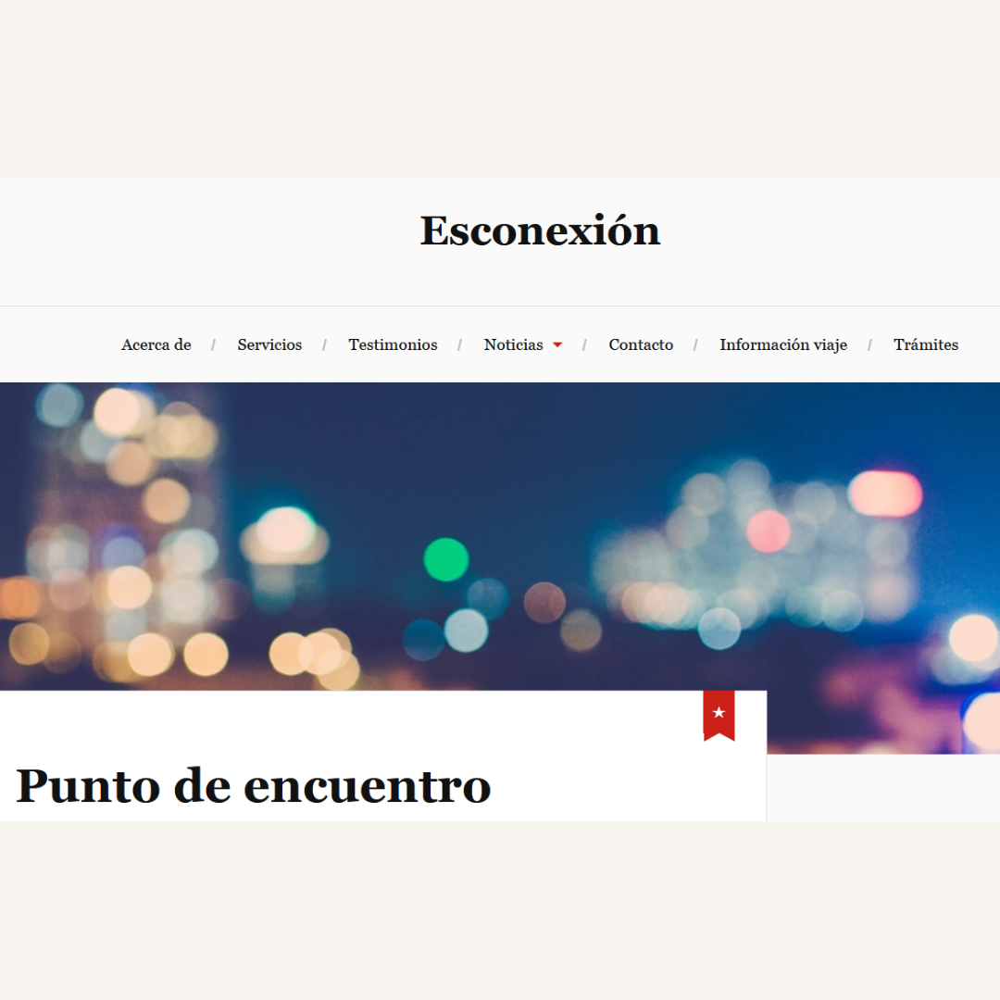
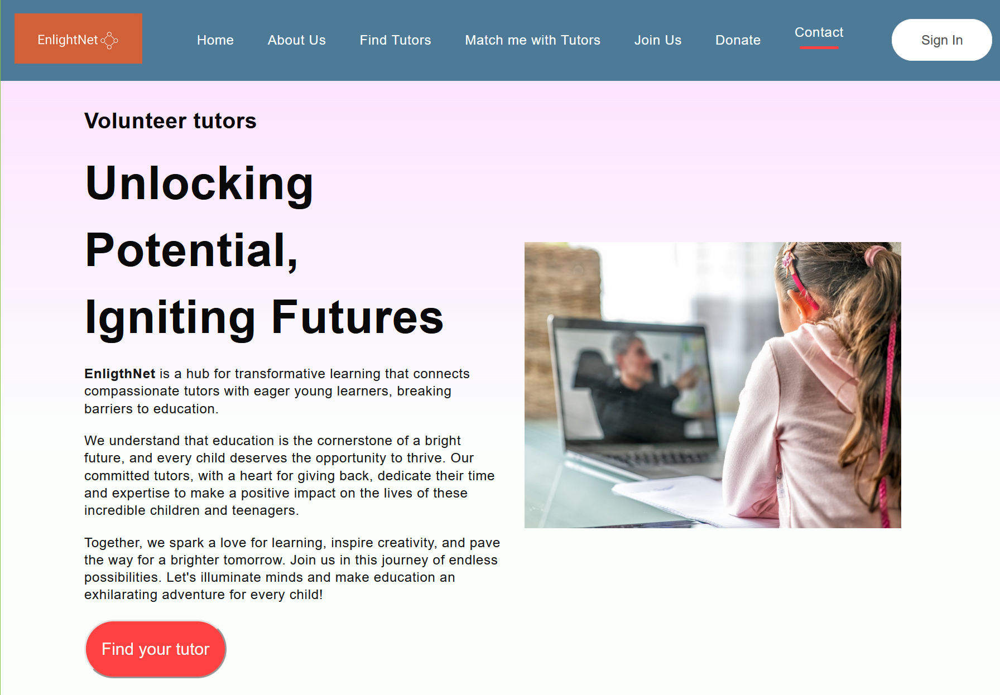
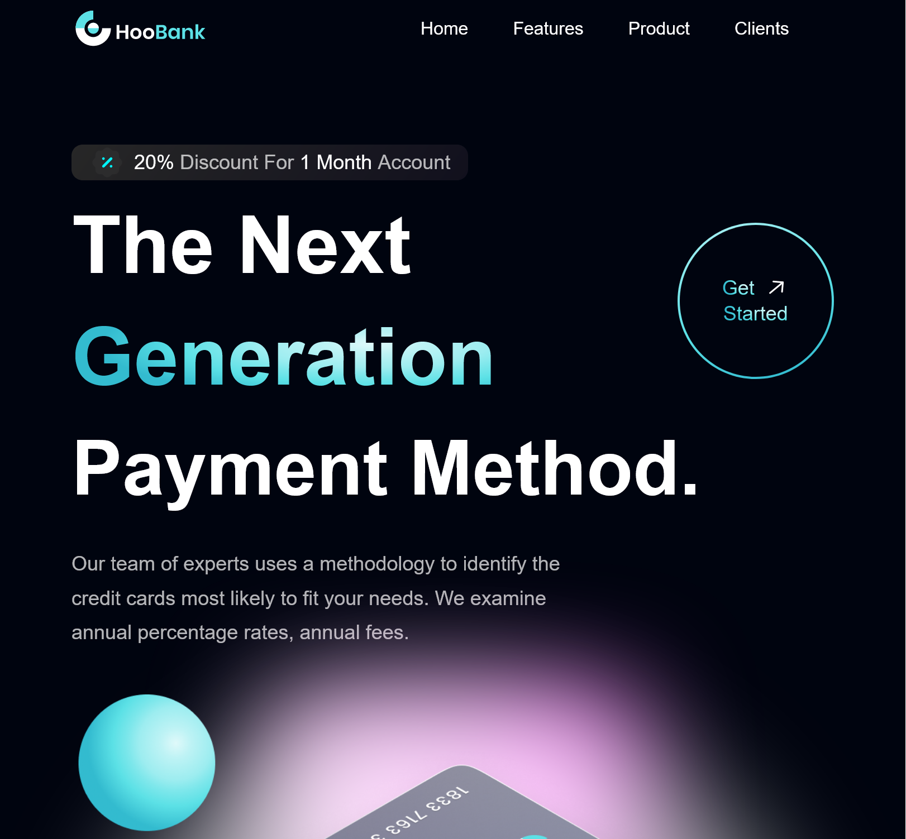
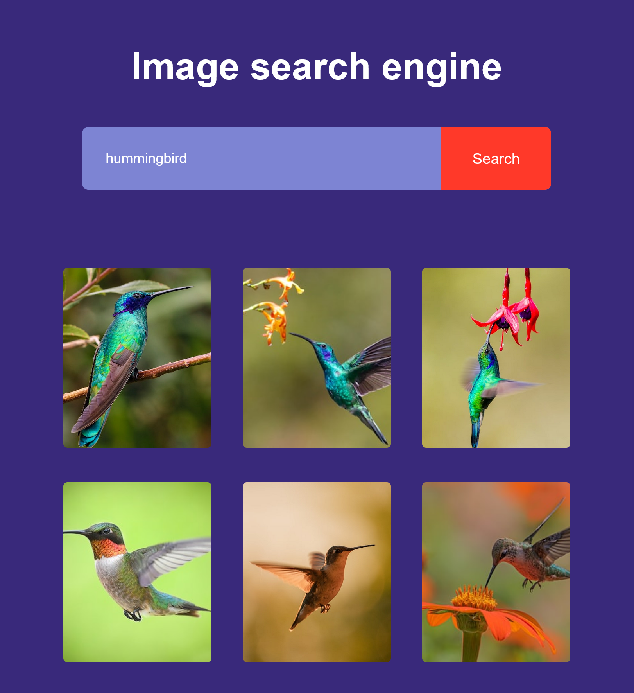

Hello, I am Soraya
Communication.Culture.Future.
Communications strategist and front-end developer building thoughtful connections between people, ideas and technology.
Explore the work ↘.jpg)
The short version
I make room for the right ideas.
My work lives between communication, culture and the digital world. I bring the editorial judgement of a journalist, the curiosity of a technologist and the calm focus of a strategist.
With experience across corporate communications, journalism and content creation in Spain and Colombia, I help organisations say what matters, clearly. I also build the interfaces that carry those ideas into the world.
More about me ↗A considered
selection.
Projects shaped by a simple belief: clarity is a creative act.
Corporate
communication
Strategy / Editorial / Brand voice↗
Esconexion
journal
Editorial / Culture / Writing↗
Education,
in action
Front-end / React / Social good↗
Banking,
made human
Front-end / React / UX↗
Image
search engine
Front-end / JavaScript / API↗A small archive of work across communication and code.
The complete index lives on GitHub ↗